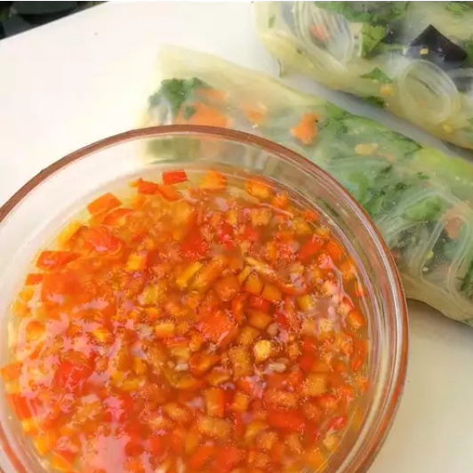

Nuoc cham(Vietnamese Spicy Dipping Sauce)

Description
This sauce can be used for dipping veggies, meats, or egg rolls. It's also great spooned over a bowl of steaming hot pho or other rice noodle soup. For me this sauce IS the flavor of Vietnamese cooking. Enjoy! This can be stored in the fridge for up to two weeks.
Ingredients
- 3 and 1/2 ounces water
- 6 spicy red chile peppers, seeded and minced
- 6 cloves garlic, minced
- 1/4 cup fish sauce
- 1/4 cup rice vinegar
- 1/4 cup white sugar
- 1/4 cup lenmon juice
Steps
- Stir water, chile peppers, garlic, fish sauce, rice vinegar, and sugar together in a saucepan over medium-low heat until sugar dissolves into the liquid; remove from heat and set aside to cool completely, about 1 hour.
- Stir lemon juice into the cooled liquid.